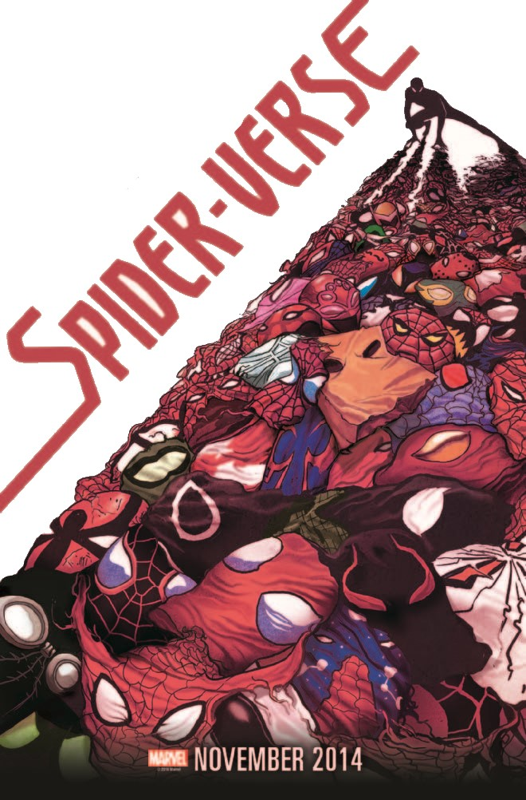
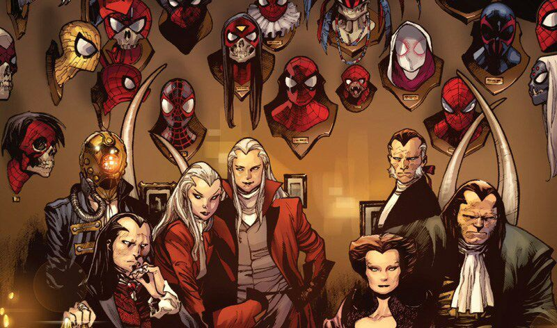
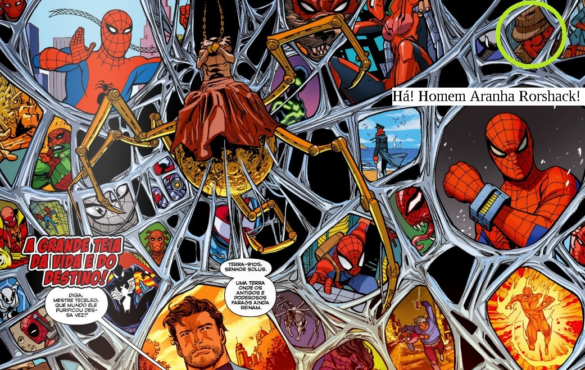

A história do Aranhaverso nos quadrinhos, teve seu início a partir da controversa, mas popular
história, na qual o Doutor Octopus conseguiu transferir sua mente para o corpo de Peter, após
viajar para o ano de 2099.
Esta versão do herói ficou conhecida como Homem-Aranha Superior, que na verdade, é o personagem
central deste, que se tornou um dos arcos mais importantes e representativos das HQ's do
personagem.
Contudo, seu retorno ao passado, pulando através das diferentes realidades pelo multiverso, o
levou a um ponto no qual Parker conseguiu recuperar novamente o controle sobre seu corpo, e
dessa forma, dois Peters da Terra-616 acabaram participando do evento.
Morlun é um velho conhecido do Homem-Aranha, que inclusive já foi derrotado mais de uma vez pelo
herói, sendo apresentado pela primeira vez, na revista “O Espetacular Homem-Aranha: De Volta Ao
Lar“, publicada em 2001.
O vilão é uma espécie de vampiro multiversal que se alimenta da força vital dos seres vivos.
Entretanto, ele necessita de uma fonte genuína dessa energia para sobreviver, assim como a que
os Totens possuem.
O mais puro elo de ligação existente entre humanos e animais é o Totem da Aranha, que por várias
gerações, sempre possuiu uma personificação, sendo que atualmente no universo 616 da Marvel, é
representada por Peter Parker.

Os Herdeiros
Durante o Aranhaverso descobrimos que Morlun é na verdade, um dos integrantes de um clã
conhecido como Os Herdeiros, uma família de seres caçadores, que também se alimentam da energia
vital dos Totens, principalmente das aranhas.
Na história “Pecado Original“, publicada em 2014, que tem início com a morte do Vigia Uato,
Peter Parker fica sabendo que a mesma aranha que o picou anos atrás, também picou Cindy Moon.
A garota foi mantida em um bunker pelos últimos treze anos por Ezekiel Sims, um Totem Aranha que
já havia estudado os métodos de Morlun, e estava tentando protegê-la de também ser caçada pelo
vilão.
Sem saber sobre os planos de Ezekiel, Peter decide ir ao encontro de Cindy e retira-la de seu
aprisionamento, mas ao mesmo tempo, acaba despertando os sentidos de Morlun, fazendo com que ele
descobra sua localização
Percebendo que a jovem (mais tarde conhecida como Teia de Seda) foi libertada pelo Homem-Aranha,
o vilão declara que “A Grande Caçada” iria começar, onde ele e sua família deveriam matar todos
os Totens Aranhas existentes no Multiverso.
Toda essa empreitada dos vilões, está relacionada com uma antiga profecia que dizia que
“derrotando O Outro, Noiva (Cindy Moon) e O Descendente, nunca mais surgiriam Totens Aranhas” e
dessa forma, os Herdeiros poderiam viver eternamente.
Em um passado distante, Morlun e sua família, composta pelos irmãos Bora, Verna, Brix, Daemos,
Jennix e Karn, o Patriaca Solus e a Matriarca, participaram em uma batalha contra a divindade
conhecida como Mestre Tecelão da Terra 001.
Esta entidade é responsável por tecer a teia do Multiverso, sendo uma espécie de guardião, que
mantem as portas das diferentes realidades conectadas entre si, para que a vida possa fluir
naturalmente entre elas.

Mestre Tecelão
O clã formado pelos vilões teve sucesso em escraviza-lo e utilizar seu poder para viajar entre
as várias dimensões existentes, e dessa forma poder caçar e absorver cada um dos Totens Aranha.
Como os Herdeiros mataram vários Totens com poderes aracnídeos, o Homem-Aranha de Otto Octavius
(ou Homem-Aranha Superior), que descobriu uma forma de saltar entre as realidades, decidiu
reunir uma equipe formada por versões alternativas do “Cabeça de Teia” para lutar contra os
poderosos irmãos.
O grande problema é que mesmo matando os Herdeiros, eles sempre ressurgem novamente, como se
fossem imortais. Isso ocorre, pois todos possuem uma enorme quantidade de clones, produzidos na
Terra 802, que recebem sua essência, toda vez que são mortos.
Enquanto a Grande Caçada ocorre, o Exército-Aranha formado pelo Homem-Aranha Superior e suas
várias frentes de ataque, deverão encontrar uma maneira eficaz de derrotar Morlun, Karn, e o
resto dos Herdeiros de uma vez por todas.